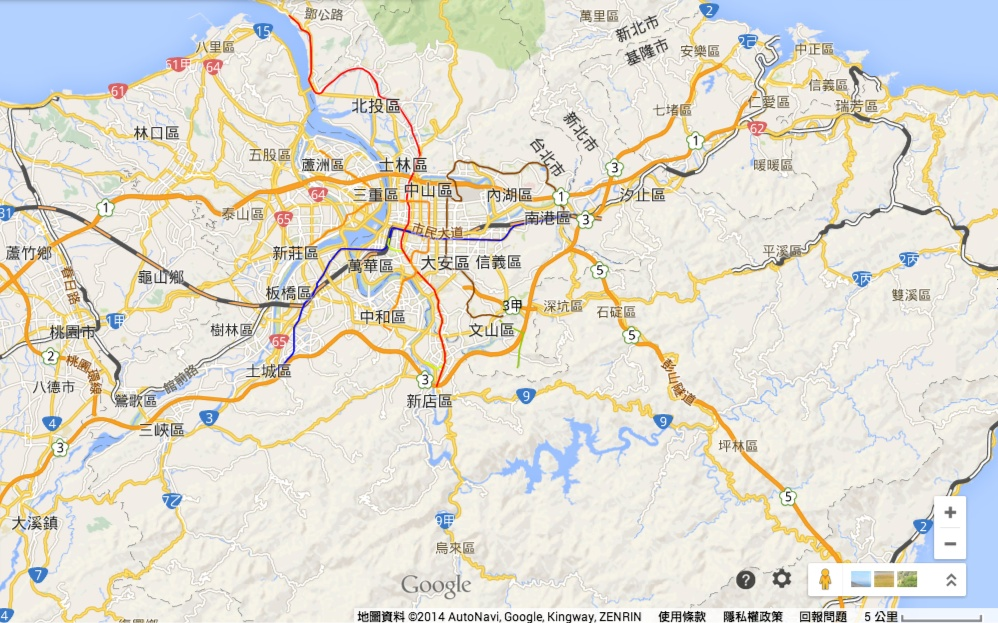

<!doctype html>
<html lang="en">
<head>
	<meta charset="UTF-8">
	<title>把回收拿給阿公阿嬤</title>
	<link rel="stylesheet" href="css/bootstrap.css">
	<link rel="stylesheet" href="css/style.css">
	<link rel="stylesheet" href="css/dataurl.css">
	<link rel="stylesheet" href="https://maxcdn.bootstrapcdn.com/font-awesome/4.6.3/css/font-awesome.min.css">
	<script src="https://code.jquery.com/jquery-1.10.2.min.js"></script>
	<script src="js/d3.v3.js"></script>
	<script src="js/bootstrap.js"></script>
	<script src="js/script.js"></script>
	<script data-pace-options='{ "elements": {"selectors": ["iframe"]} }' src="js/pace.min.js"></script>
</head>
<body>
	<div id="wrapper">
		<div id="map">
<!----><iframe id='ifmap' class="progress" src="https://www.google.com/fusiontables/embedviz?q=select+col2+from+1BILYy9TOfCajakAc0_mVuM4KiN8EdroQxzahA-g&viz=MAP&h=false&lat=23.66519554836995&lng=121.2888611368409&t=1&z=7&l=col2&y=2&tmplt=2&hml=ONE_COL_LAT_LNG" frameborder="0"></iframe>
</div>
<div class="logo"></div>
		<div id="right-pane">

			<div class="right-icon">
				<i class="fa fa-3x fa-question-circle" aria-hidden="true"></i>
			</div>

			<div class="right-icon">
				<i class="fa fa-3x fa-search" aria-hidden="true"></i>
			</div>
			<div class="right-icon">
				<i class="fa fa-3x fa-pencil-square-o" aria-hidden="true"></i>
			</div>

<div class="right-bottom-icon">

</div>
<script>
	$(function(){

	})
</script>
			
		</div>

</div>

	
</body>
</html>